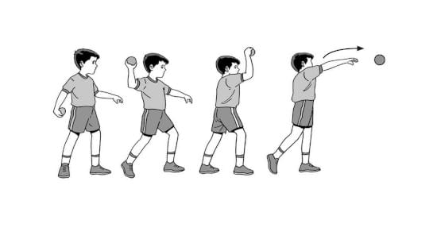
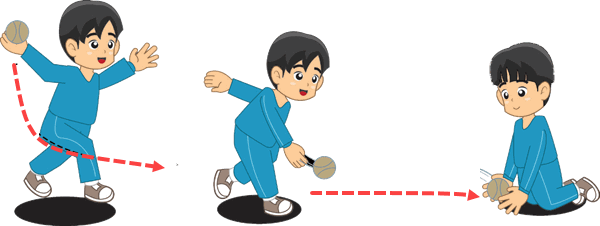
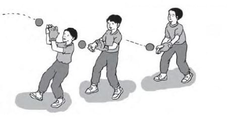

Bola kasti merupakan salah satu olah raga dengan menggunakan media bola kecil seperti bulu tangkis, dimana kasti dimainkan secara beregu, dan merupakan permainan tradisional yang selalu mengutamakan unsur kekompakan, ketangkasan serta kesenangan.
Salah satu kaki berada di depan serta posisi badan agak serong.
Pandangan mengarah ke sasaran.
Tangan yang memegang bola diputar ke atas, belakang, bawah, dan depan.Kemudian, lepaskan bola.
Melempar Bola Melambung
Cara melakukan:
Bola dipegang pada pangkal ruas jari tangan di antara jari telunjuk,jari tengah,dan jari manis. Sedangkan,jari kelingking dan ibu jari mengontrol bola agar tidak jatuh.
Badan condong ke belakang,ayunan lengan ke bawah ke atas
Melempar dengan tangan terkuat.Apabila melempar dengan tangan kanan,maka kaki kiri berada di depan,begitu sebaliknya.
Bola dilempar melambung diikuti gerakan lanjutan dengan melangkah kaki belakang ke depan
Pandangan mata kearah sasaran lemparan


Melempar Bola Menyusur Tanah
Cara melakukan:
Pemain harus memegang bola pada bagian pangkal ruas dari jari tangan.
Posisi badan pemain harus membungkuk.
Ayunkan lengan ke belakang kita serta ke depan melalui bawah.
Lakukan lemparan bola menyusur tanah dengan mengarah kepada sasaran.
Teknik Menangkap Bola
dalam permainan kasti dibagi 4, diantaranya adalah sebagai berikut:
Menangkap Bola Mendatar.
Menangkap Bola Melambung.
Menangkap Bola Menyusur Tanah.
Menangkap Bola Memantul Tanah.

Gerak Manipulatif
Memukul bola kasti
Letakkan alat pemukul di atas bahu pada sebelah kanan dengan posisi siku tangan sedang memegang alat pemukul kita tekuk.
Pandangan fokus ke arah pelambung dan juga ke arah datangnya bola.
Ayunkan alat pemukul dengan posisi siku lurus diikuti dengan lecutan pada pergelangan tangan ketika bola dalam jangkauan pukulan kita.
Selanjutnya diikuti juga dengan gerakan lanjutan, yakni dengan melangkahkan kaki dari arah belakang ke depan.